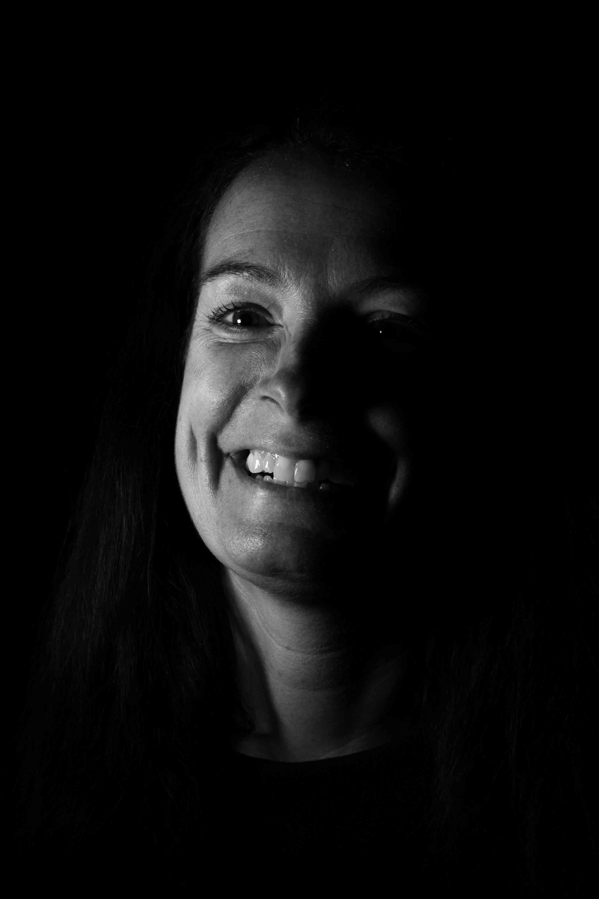

Listen to this page:
Fedra heads a team of sustainability researchers and is on a personal quest to bring innovation into sustainable & societal transitions.
"Annoyed"

Her positivity and can-do attitude is infectious and she has a relentless and renewable energy driving her forwards. She is annoyed that, while we all know what needs to be done to improve the planet and make society more sustainable, we’re not doing it: “how hard is it?” she says, incredulous.
"Brave"

She also tells me that we need to be brave. “We need to act now, instead of sitting around and just talking”, she says, “and we have to call it out when people are spinning a story that isn’t correct”. She is a hard worker, eager, focused, and driven, in an effort to protect what we have left. She tells me that she feels it isn’t too late: “It’s not all lost yet”, a reference to a song that has deep emotional meaning for her. It’s evident that she believes this, but more than that – she lives it.
"Compassionate"

She tells me she feels compassionate, something she also feels we must embody, since climate change won’t affect everyone equally. She believes that she is extraordinarily lucky to have been born in the European Union: “we need compassion with those who don’t have the ability or power to act or live accordingly.”
When I ask whether she is hopeful for the future, her reply is clear and irrefutable: “yes, I am!” Through her life, filled with music, her other passion, resonate the lyrics of another song: “people still marry more than they divorce, people still laugh more than they grieve”. “Ultimately”, she says, “I believe people will pull through – I have huge faith that they will”.

Visit the project website